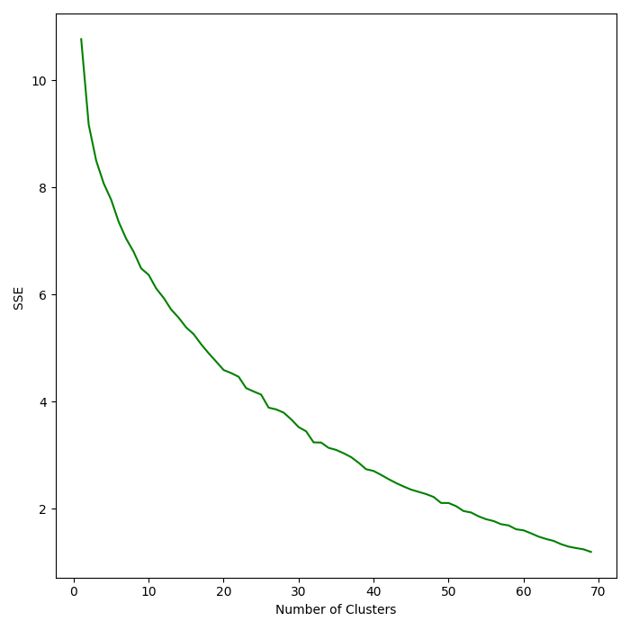
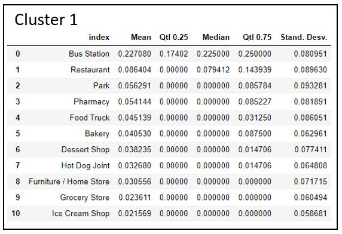
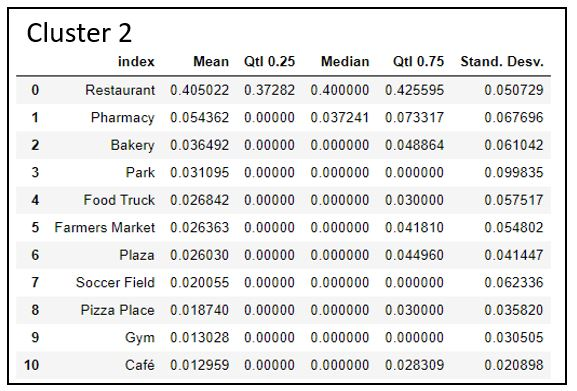

In this post I will analyzes the surroundings of the Metro de Santiago’s subway stations. For Metro, it is important to understand the behavior of its customers. Much of this behavior comes from the characteristics of the origin and destination of the trip, therefore describing the stations regarding the services and products of the surrounding environment can provide Metro with valuable information to understand certain indicators of demand.
The aim of this analysis will be to get information of the surrounding of each station from the Foursquare API, then with this data create clusters of stations that allows to summarize the patterns observed in the data and finally visualize this results to conclude with the findings of the models.
Install Python and the virtual environment library (pip instal virtualenv).
Create a new project from Rstudio.
Start a virtual environment from cmd with virtualenv .env command.
In command prompt, go into .env folder with cd .env, then into Scripts folder. Run activate from cmd.
Now you are in the virtual environment and can proceed to install the different python libraries that you will use. Then you can close the cmd.
Create a .Rprofile file in the project folder, on the file write this line of code (replace PATH_TO_YOUR_PROJECT with your information):
Sys.setenv(RETICULATE_PYTHON = "PATH_TO_YOUR_PROJECT/.env/Scripts")reticulate::py_config()First we will import all the libraries needed.
import numpy as np
import pandas as pd
import os
import json
import requests # library to handle requests
from geopy.geocoders import Nominatim
import matplotlib.cm as cm
import matplotlib.colors as colors
import matplotlib.pyplot as plt
from sklearn.cluster import KMeans
from sklearn import metrics
from sklearn import preprocessing
import folium # map rendering library
print('Hello Capstone Project Course: Libraries loaded!')## Hello Capstone Project Course: Libraries loaded!Let’s read the station data:
df_stations = pd.read_csv('data/metro_station.csv',sep=";", decimal=".")
df_stations_unique = df_stations.drop_duplicates(subset=['est_name']).copy()
df_stations_unique.reset_index(drop = True, inplace = True)
df_stations_unique.rename(columns = {'est_name' : 'Station'}, inplace = True)| est_cod | linea | via | lon | lat | Station |
|---|---|---|---|---|---|
| SP | L1 | 1 | -70.72322 | -33.44528 | San Pablo |
| NP | L1 | 1 | -70.72274 | -33.45143 | Neptuno |
| PJ | L1 | 1 | -70.71547 | -33.45753 | Pajaritos |
| LR | L1 | 1 | -70.70677 | -33.45764 | Las Rejas |
| EC | L1 | 1 | -70.69973 | -33.45603 | Ecuador |
With this data let’s plot the stations on a map. First let´s find the location of the center of the city (Santiago, Chile).
address = 'Santiago, Chile'
geolocator = Nominatim(user_agent="tor_explorer")
location = geolocator.geocode(address)
latitude = location.latitude
longitude = location.longitude
print('The geograpical coordinate of Santiago are {}, {}.'.format(latitude, longitude))## The geograpical coordinate of Santiago are -33.4377756, -70.6504502.Let’s plot the stations with folium librarie.
map_santiago = folium.Map(location=[latitude*1.001, longitude], zoom_start=11)
# add markers to map
for lat, lng, name in zip(df_stations_unique['lat'], df_stations_unique['lon'], df_stations_unique['Station']):
label = '{}'.format(name)
label = folium.Popup(label, parse_html=True)
folium.CircleMarker(
[lat, lng],
radius=5,
popup=label,
color='blue',
fill=True,
fill_color='#3186cc',
fill_opacity=0.7,
parse_html=False).add_to(map_santiago)
map_santiago.save("mapa1.html")The next task is get the venues’s information from Foursquare API. First let’s define the credentials and version. For this i use local environmental variables for privacy with the library os.
CLIENT_ID = os.getenv('foursquare_client_id') # your Foursquare ID
CLIENT_SECRET = os.getenv('foursquare_client_secret') # your Foursquare Secret
VERSION = '20180605' # Foursquare API version
LIMIT = 100 # A default Foursquare API limit valueLet’s define a function that help us to obtain the venues from each stations and get the information.
def getNearbyVenues(names, latitudes, longitudes, radius=500):
venues_list=[]
for name, lat, lng in zip(names, latitudes, longitudes):
print(name)
# create the API request URL
url = 'https://api.foursquare.com/v2/venues/explore?&client_id={}&client_secret={}&v={}&ll={},{}&radius={}&limit={}'.format(
CLIENT_ID,
CLIENT_SECRET,
VERSION,
lat,
lng,
radius,
LIMIT)
# make the GET request
results = requests.get(url).json()["response"]['groups'][0]['items']
# return only relevant information for each nearby venue
venues_list.append([(
name,
lat,
lng,
v['venue']['name'],
v['venue']['location']['lat'],
v['venue']['location']['lng'],
v['venue']['categories'][0]['name']) for v in results])
nearby_venues = pd.DataFrame([item for venue_list in venues_list for item in venue_list])
nearby_venues.columns = ['Station',
'Station Latitude',
'Station Longitude',
'Venue',
'Venue Latitude',
'Venue Longitude',
'Venue Category']
return(nearby_venues)
metro_venues = getNearbyVenues(names=df_stations_unique['Station'],
latitudes=df_stations_unique['lat'],
longitudes=df_stations_unique['lon'])We fix some categories.
## We unify restaurants categories
metro_venues.loc[metro_venues['Venue Category'].str.contains('Restaurant', regex=False, na=False), 'Venue Category'] = 'Restaurant'
## We erase metro station category
metro_venues = metro_venues[~metro_venues['Venue Category'].str.contains('Metro', na=False)]
print('There are {} uniques categories.'.format(len(metro_venues['Venue Category'].unique())))## There are 240 uniques categories.Let’s transform the data to a wide format.
metro_onehot = pd.get_dummies(metro_venues[['Venue Category']], prefix="", prefix_sep="")
# add neighborhood column back to dataframe
metro_onehot['Station'] = metro_venues['Station']
# move neighborhood column to the first column
fixed_columns = [metro_onehot.columns[-1]] + list(metro_onehot.columns[:-1])
metro_onehot = metro_onehot[fixed_columns]Now let’s obtain the mean of each category per station. And obtain the numeric matrix we are going to use for fitting the k-means model.
metro_grouped = metro_onehot.groupby('Station').mean().reset_index()
metro_grouped_clustering = metro_grouped.drop('Station', 1)
X = metro_grouped_clusteringNow lets fit with different number of clusters to define the optimum amount with the elbow method.
Ks = 70
mean_acc = np.zeros((Ks-1))
std_acc = np.zeros((Ks-1))
for n in range(1,Ks):
#Train Model and Predict
kmeans = KMeans(n_clusters=n, random_state=0).fit(X)
mean_acc[n-1] = kmeans.inertia_
plt.plot(range(1,Ks),mean_acc,'g')
plt.ylabel('SSE ')
plt.xlabel('Number of Clusters')
plt.tight_layout()
plt.savefig('kmeans_sse.png')
plt.show()
Let’s fit the model with k = 8.
# set number of clusters
kclusters = 8
# run k-means clustering
kmeans = KMeans(n_clusters=kclusters, random_state=0).fit(X)Let’s merge the result with the stations and venues table to calculate descriptive statistics for each cluster.
metro_grouped.insert(0, 'Cluster Labels', kmeans.labels_)
metro_merged = df_stations_unique
metro_merged = metro_merged.join(metro_grouped.set_index('Station'), on='Station')Now we plot the results with station colored by cluster with the folium library.
# create map
map_clusters = folium.Map(location=[latitude, longitude], zoom_start=11)
# set color scheme for the clusters
x = np.arange(kclusters)
ys = [i + x + (i*x)**2 for i in range(kclusters)]
colors_array = cm.rainbow(np.linspace(0, 1, len(ys)))
rainbow = [colors.rgb2hex(i) for i in colors_array]
# add markers to the map
markers_colors = []
for lat, lon, poi, cluster in zip(metro_merged['lat'], metro_merged['lon'], metro_merged['Station'], metro_merged['Cluster Labels']):
label = folium.Popup(str(poi) + ' Cluster ' + str(cluster), parse_html=True)
folium.CircleMarker(
[lat, lon],
radius=5,
popup=label,
color=rainbow[cluster-1],
fill=True,
fill_color=rainbow[cluster-1],
fill_opacity=0.7).add_to(map_clusters)
map_clusters.save("mapa_cluster.html")Then we calculate some statistics with a function to summarize each cluster.
cluster_data = neighborhoods_venues_sorted.iloc[:,0:2].join(metro_grouped.set_index('Station'), on='Station').copy()
cluster_data_mean = cluster_data.groupby('Cluster Labels').mean().reset_index()
cluster_data_median = cluster_data.groupby('Cluster Labels').median().reset_index()
cluster_data_q25 = cluster_data.groupby('Cluster Labels').quantile(.25).reset_index()
cluster_data_q75 = cluster_data.groupby('Cluster Labels').quantile(.75).reset_index()
cluster_data_std = cluster_data.groupby('Cluster Labels').std().reset_index()
cluster_data_name = cluster_data.groupby(['Cluster Labels'])['Station'].agg([('Stations', lambda Station: ' - '.join(Station))])
def clusterSummary(id):
print(cluster_data_name.iloc[id,0])
df_cluster1 = pd.concat([cluster_data_mean.reset_index(drop=True).iloc[id,1:],
cluster_data_q25.iloc[id,1:],
cluster_data_median.iloc[id,1:],
cluster_data_q75.iloc[id,1:],
cluster_data_std.iloc[id,1:]], axis=1)
df_cluster1.columns = ['Mean', 'Qtl 0.25', 'Median', 'Qtl 0.75', 'Stand. Desv.']
df_cluster1.sort_values(by=['Mean'], ascending=False,inplace = True)
return(df_cluster1.reset_index().loc[0:10,:])Now let’s present the structure of each cluster with the venue frequency for the 10 most common venue for each one.


Then with this tables let’s try to describe the different clusters:
Cluster 1: The surroundings of this stations are characterized with a bus station near them, with some other venues like restaurants, parks and pharmacy. Probably in this group are the intermodal stations.
Cluster 2: This stations are near a restaurants zone, with this venue having the higher percentage of the surrounding (37% to 42% interquartile distance)
Cluster 3: This stations have more variety of venues in the surround with a medium percentage of restaurant, but also pharmacy and a lot of low percentage venues like gyms, bakeries and others.
Cluster 4: This is a cluster with one station, that only have a mall and music venue in the surrounding.
Cluster 5: This stations have a high percentage of the surrounding with restaurants, greater than cluster 3, but it also have a good variety of venues like bars, plazas, coffee shops and others.
Cluster 6: This group stations have a surrounding environment with a high percentage plaza, soccer field and food truck. So is a zone for sports and outdoors activities.
Cluster 7: This stations are near food trucks, soccer fields and stadium.
Cluster 8: This cluster has high percentage of coffee stores and furniture/homes stores.
In this analysis we merge data from Santiago’s subways stations with the venues of their surroundings downloaded from the Foursquare’s API. This information allows to fit a cluster model using k-means methods and found segmentation for the 125 stations of the network. We obtain 8 clusters that represent specific surrounding structure and allows us to have a better and summarized understanding of this system.
For next steps we can use the patterns we find in this analysis and test if it can helps in other models for customers behavior.